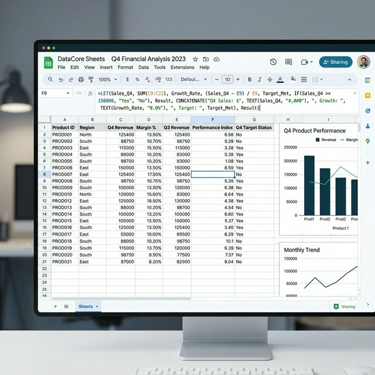
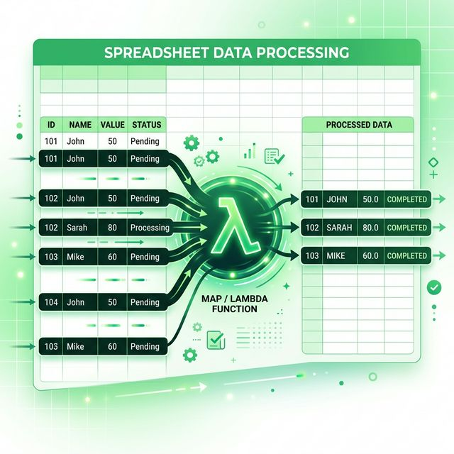

구글 스프레드시트의 2.0 시대를 연 이 함수들은 각각 고유한 역할을 수행하며 시너지를 냅니다. MAP 함수는 지정한 범위의 각 데이터에 대해 일괄적으로 특정 연산을
수행하게 하며, LAMBDA 함수는 사용자 정의 함수를 즉석에서 만들어 수식의 재사용성을 높입니다. 마지막으로 LET 함수는 수식 내에서
변수를 선언하여 복잡한 수식을 한결 읽기 쉽게 만들어주죠.
이 세 함수의 조합은 단순히 편리함을 넘어 수식의 연산 속도를 획기적으로 개선합니다. 동일한 연산을 반복해서 입력할 필요가 없으므로 파일의 용량은 줄어들고, 수정을 원할
때는 중앙의 수식 한 곳만 고치면 되기 때문입니다. 이제 더 이상 수천 행의 셀에 수식을 끌어서 내리는(Auto-fill) 수고를 하지 않아도 됩니다.
| 함수명 | 기능 요약 | 실무 활용도 |
|---|---|---|
| MAP | 배열의 모든 요소에 함수 매핑 | ⭐⭐⭐⭐⭐ |
| LAMBDA | 익명 함수(Custom Logic) 정의 | ⭐⭐⭐⭐ |
| LET | 수식 내 변수 할당 및 가독성 개선 | ⭐⭐⭐⭐⭐ |

구글 스프레드시트에서 복잡한 수식을 처리하는 세련된 UI / AI 제작 이미지
수식을 작성하다 보면 동일한 하위 수식(예: 특정 범위의 합계나 복잡한 IF 조건)을 반복해서 사용하는 경우가 많습니다. 이때 LET 함수를 사용하면 해당 수식에 간단한
'이름'을 붙여 변수로 선언할 수 있습니다. 예를 들어 'A1:A100의 합계'를 여러 번 써야 한다면 이를 'total'이라는 이름으로 선언하여 수식 내에서 자유롭게
호출하는 방식이죠.
이렇게 작성된 수식은 나중에 본인이나 동료가 읽었을 때도 논리 구조가 한눈에 들어옵니다. 또한 구글 시트 엔진은 변수로 선언된 값을 한 번만 계산하여 저장해 두므로, 전체적인 계산 속도가
빨라지는 효과까지 덤으로 얻을 수 있습니다. 복잡한 기획 보고서나 정산 시트에서 그 빛을 발하는 함수입니다.
LAMBDA는 구글 스프레드시트의 한계를 뛰어넘게 만드는 마법의 함수입니다. 시트에서 기본적으로 제공하지 않는 특수한 계산 로직이 필요할 때, 사용자가 직접 변수를
정의하고 연산 과정을 설계할 수 있기 때문입니다. 이는 마치 엑셀의 VBA나 구글 앱스 스크립트(GAS)를 쓰지 않고도 순수 함수만으로 프로그래밍적 사고를 구현하는 것과
같습니다.
LAMBDA는 단독으로 쓰이기보다 MAP, SCAN, REDUCE 등 '헬퍼 함수'들과 결합할 때 진정한 위력을 발휘합니다. 한 번 정의된 로직은 이름만 다르게 하여 여러 시트에서 재사용할 수
있으므로, 업무 템플릿을 제작할 때 중복되는 계산 구조를 획기적으로 줄여줍니다. 실무에서는 세율 계산이나 복잡한 텍스트 파싱 업무에 자주 활용됩니다.
과거에는 ARRAYFORMULA가 배열 수식의 왕이었다면, 이제는 MAP이 그 자리를 대체하고 있습니다. ARRAYFORMULA는 특정
함수(예: IF, SUM 등)와 결합할 때 원하는 대로 작동하지 않는 경우가 많았지만, MAP은 LAMBDA와 결합하여 각 행이나 열의 값에 대해 정교하게 개별 연산을 수행합니다.
예를 들어, 세 개의 열(A, B, C)에서 각각의 값을 가져와 복잡한 계산을 수행한 뒤 한 번에 출력해야 할 때 MAP을 사용하면 소름 돋을 정도로 깔끔한 결과물을 얻을 수 있습니다.
데이터 범위 전체를 하나의 관리 포인트로 묶어주기 때문에, 중간에 행을 삽입하거나 삭제해도 수식이 깨질 염려가 매우 적습니다.

MAP과 LAMBDA를 활용한 동적 데이터 집계 화면 / AI 제작 이미지
구체적인 실무 예제를 들어보겠습니다. 매출액에 따라 세율이 달라지는 누진세 구조를 시트에 반영한다고 가정해 봅시다. 기존에는 수많은 중첩 IF문을 써야 했지만, MAP과
LAMBDA를 조합하면 단 한 줄의 수식으로 수천 명의 세금을 즉시 계산할 수 있습니다. 이때 LET를 함께 쓰면 세율 구간을 변수로 선언하여
가독성까지 챙길 수 있죠.
아래 가상 테이블은 이러한 고급 수식이 어떻게 데이터를 처리하는지 보여줍니다. 단 하나의 셀(보통 데이터의 첫 행)에만 수식을 입력하면 나머지 모든 행은 자동으로 계산값이 채워집니다. 이는
휴먼 에러(수식 복사 누락 등)를 원천 차단하는 가장 완벽한 방법입니다.
| 이름 | 매출액(A) | 비용(B) | 최종 세액 (MAP 적용) |
|---|---|---|---|
| A직원 | 5,000,000 | 1,200,000 | 자동 계산 중... |
| B직원 | 8,200,000 | 2,500,000 | 자동 계산 중... |
복합 수식을 작성할 때 가장 당혹스러운 순간은 #VALUE! 또는 #ERROR! 메시지를 만났을 때입니다. LET 함수는 이럴 때 구세주가 됩니다. 수식 전체를 한 번에
계산하지 말고, LET 안에서 변수 하나하나를 출력해 보며 어느 단계에서 오류가 발생하는지 추적할 수 있기 때문입니다.
데이터 범위의 크기가 맞지 않거나(MAP에서 참조하는 배열의 크기 불일치), LAMBDA에 전달되는 인수의 개수가 다를 때 주로 오류가 발생합니다. 수식을 작성할 때는 항상 가장 안쪽의
로직부터 작은 범위에서 테스트한 뒤 점진적으로 LET과 MAP으로 감싸는 방식을 취하시길 권장합니다.
수만 행 이상의 대용량 데이터를 다룰 때, 개별 셀에 박힌 수식들은 시트의 로딩 속도를 현저히 늦춥니다. 하지만 배열 헬퍼 함수(MAP 등)는 구글의 서버 자원을 보다
효율적으로 분산 활용하므로 체감 속도가 훨씬 빠릅니다. 2026년 실무 환경에서는 데이터의 양이 기하급수적으로 늘어나는 만큼 이러한 최적화 기술은 필수적입니다.
특히 외부 시트에서 데이터를 가져오는 IMPORTRANGE와 결합할 때, 가져온 데이터를 메모리상에서 LET으로 선언하여 가공한 뒤 출력하면 불필요한 네트워크 호출을 줄일
수 있습니다. 데이터의 무게는 덜어내고 연산의 정밀도는 높이는 스마트한 시트 운영의 정석이라 할 수 있습니다.
데이터 양에 따른 연산 부하를 시각적으로 보여주는 대시보드 / AI 제작 이미지
협업 환경에서 내가 짠 복잡한 MAP/LAMBDA 수식이 동료에게 '외계어'처럼 보인다면 곤란하겠죠. LET 함수에서의 변수명 설정이 중요한 이유입니다. `x`, `y`
같은 무의미한 이름보다는 `Unit_Price`, `Tax_Rate`처럼 역할을 명확히 알 수 있는 이름을 사용하십시오. 이는 프로그래밍의 클린 코드 원칙과도 일맥상통합니다.
또한, 수식의 상단 셀에 메모나 주석을 달아 이 배열 수식이 어디까지 영향을 미치는지 명시해 주는 매너가 필요합니다. 내가 없어도 시트가 완벽하게 돌아가게 만드는 것이
진정한 엑셀/시트 마스터의 덕목입니다. 2026년의 전문가는 단순히 도구를 쓰는 사람이 아니라, 도구를 통해 조직 전체의 지능을 높이는 사람임을 잊지 마세요.
지금까지 살펴본 MAP, LAMBDA, LET의 조합은 우리를 단순한 '데이터 입력자'에서 '시스템 설계자'로 진화시켜 줍니다. 초기에 수식을 설계하는 시간은 조금 더
걸릴지라도, 한 번 구축된 시스템은 운영 기간 내내 수만 시간의 반복 노동을 줄여줄 것입니다. 정교하고 깔끔한 수식은 곧 여러분의 전문성을 증명하는 가장 확실한 포트폴리오가 됩니다.
오늘 배운 내용을 바로 실무 파일에 적용해 보세요. 작은 IF문 하나를 LET으로 바꾸는 것부터 시작하시면 됩니다. 어느새 여러분의 시트는 예술 작품처럼 군더더기 없이 깔끔해져 있을 것입니다. 구글
스프레드시트의 무궁무진한 고급 기능을 활용하여 2026년 업무 경쟁력을 압도적으로 확보하시기 바랍니다.